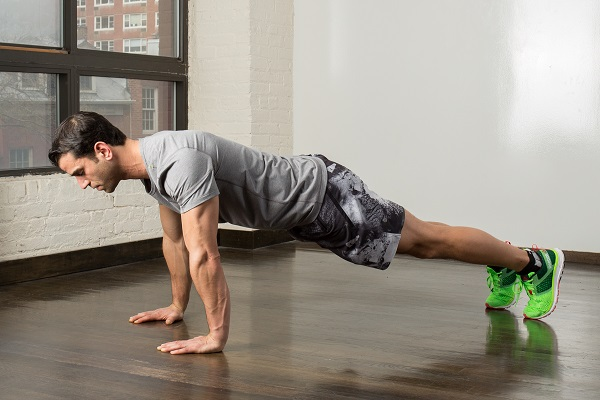
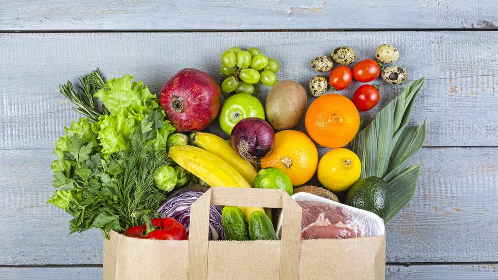
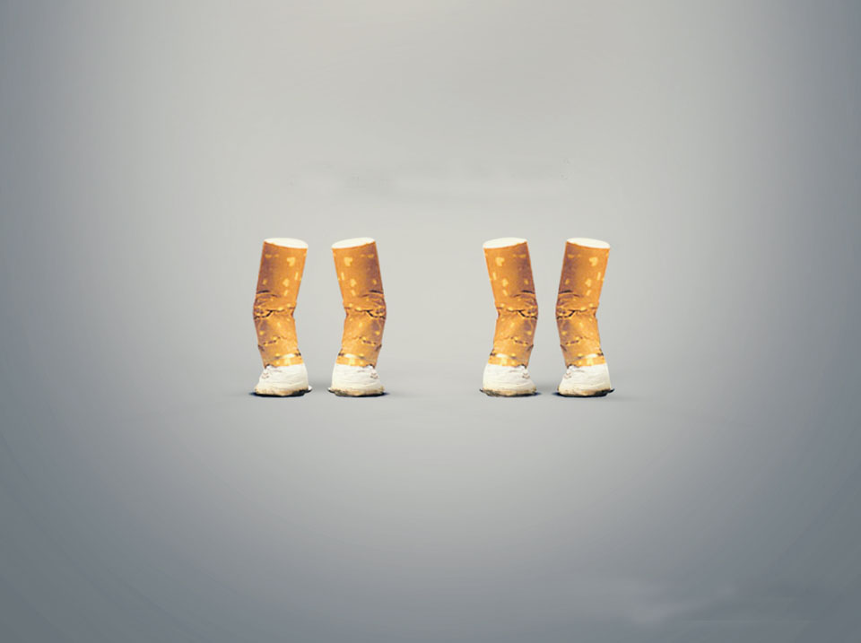

Olahraga

Olahraga bisa dilakukan di rumah. Bahkan saat baru bangun tidur atau menjelang tidur kamu bisa lakukan gerakan-gerakan seperti olahraga yang menyehatkan tubuh. Olahraga penting untuk melancarkan metabolisme tubuh, menjaga kesehatan jantung, dan meningkatkan sistem imun agar kamu nggak mudah sakit. Selain itu, latihan fisik secara rutin juga bisa membantu proses regenerasi tubuh secara maksimal.
Makan Bergizi

Sayur dan buah mengandung serat prebiotik, vitamin, mineral, serta berbagai antioksidan yang dibutuhkan oleh tubuh. Studi menunjukkan jika orang yang mengonsumsi lebih banyak sayur dan buah bisa hidup lebih lama, serta memiliki risiko yang lebih rendah terkena penyakit jantung, diabetes tipe-2, obesitas, dan penyakit lainnya. Para ahli pun merekomendasikan agar setengah dari isi piring kita berisikan sayur dan buah. Selain itu, pastikan juga untuk mengonsumsi nutrisi yang seimbang setiap harinya.
Minum Secukupnya
Minum air putih yang cukup dapat memberi banyak manfaat, yakni meningkatkan metabolisme dan mencegah dehidrasi. Ketika mengalami dehidrasi, kita akan kehausan, lemas, sakit tenggorokan, hingga pusing. Jadi, minumlah air setidaknya 8 gelas per hari agar kebutuhan cairan tubuh terpenuhi untuk menjaga tubuh tetap sehat dan bugar.
Stop Merokok

Merokok bukan hanya merusak paru-paru, namun juga dapat merusak berbagai organ tubuh lainnya. Hal ini juga membuat kita lebih berpotensi terkena kanker, penyakit jantung, dan penyakit serius lainnya. Bahkan perokok pasif pun berisiko mengalami bahaya yang sama. Di samping itu, mengonsumsi minuman beralkohol secara berlebihan juga dapat meningkatkan risiko terkena kanker dan penyakit hati. Oleh sebab itu, akan lebih baik jika menghindari kebiasaan merokok dan minum minuman beralkohol.
Istirahat Teratur
Begadang menjadi kebiasaan banyak orang. Alih-alih tidur, malam hari seringkali dihabiskan dengan bermain gadget atau menonton TV. Padahal kurang tidur dapat meningkatkan kemungkinan terkena penyakit jantung, diabetes, stroke, obesitas, dan masalah kesehatan lainnya. Selain itu, kurang tidur juga dapat mengganggu konsentrasi, kewaspadaan, dan kinerja. Oleh sebab itu, biasakan untuk tidur dengan cukup dan berkualitas. Tidur yang cukup dapat membantu menjaga kesehatan secara keseluruhan.